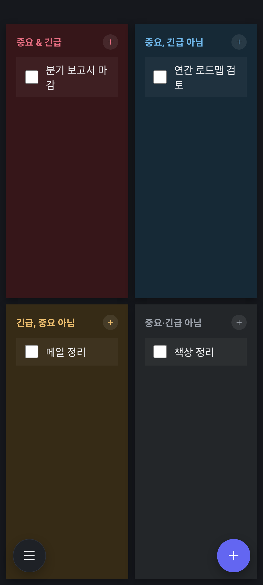
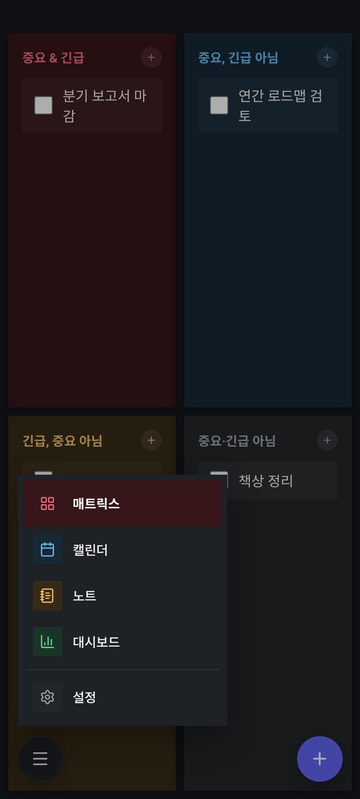

WAKESTRIDE
일의 순서를,
다시 정의하다.
중요한 일과 급한 일을 가려내고,
캘린더와 노트가 그 흐름을 그대로 이어갑니다.
Windows 데스크톱
Android 태블릿 · 폰
iOS · 준비 중

우선순위
무엇부터 해야 할지,
고민하지 않게.
중요도와 긴급도, 두 가지 기준으로 할 일을 네 영역에 자동으로 나눕니다.
지금 진짜 해야 할 일이 선명해집니다.
일정
한 달과 하루를,
한 화면에서.
월간 그리드와 하루 일정이 나란히 놓입니다.
좌우로 넘기면 다음 달, 클릭 한 번이면 그날의 일정까지.

기록
쓰는 것과
해내는 것을 잇다.
마크다운으로 기록한 노트가 할 일·일정과 서로 연결됩니다.
맥락은 그대로, 흐름은 끊기지 않게.

통계
얼마나 해냈는지,
숫자로 확인.
그룹별 진행률과 기한 준수율, 최근 사용량까지.
오늘의 성과를 한눈에 확인합니다.

태블릿 · 라이트 모드
넓은 화면은,
넓게 씁니다.
사이드바 내비게이션과 하루 일정 패널을 한 화면에.
라이트 테마에서도 색은 그대로, 톤만 밝게.

모바일 · 다크 모드
한 손에 맞춘
네비게이션.
화면을 다 차지하던 탭바 대신 좌하단 버튼 하나로.
각 화면은 매트릭스 사분면과 같은 색으로 구분됩니다.


데스크톱 위젯
바탕화면에도,
그대로.
캘린더와 매트릭스를 바탕화면에 붙박이로 띄워두고,
앱을 열지 않아도 오늘 할 일을 바로 확인합니다.

어디서나 하나의 앱
같은 데이터, 같은 흐름 — 데스크톱에서 시작하고 이동 중엔 휴대폰으로.
🖥️
Windows
데스크톱 · 위젯📱
Android
태블릿 · 폰🍎